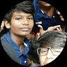

R K Rudran

Summary
3
I am well dedicated and fast learner in all aspect of modern technologies.
so I am capable of doing various projects in team in various situations.
Education
- I completed my tenth standard in Agasthya Academy , Arachulur , Erode at a percentile of 80.
- I completed my twelth grade at Nandha Central School, Perundurai, Erode with 91 percentile.
- I done my Bachelor of Engineering CSE at Government Collage Of Engineering , Theni Tamilnadu.
Work Experience
skills
- I have taken web development course by Angela Yu's .
- also completed python boot camp .
others